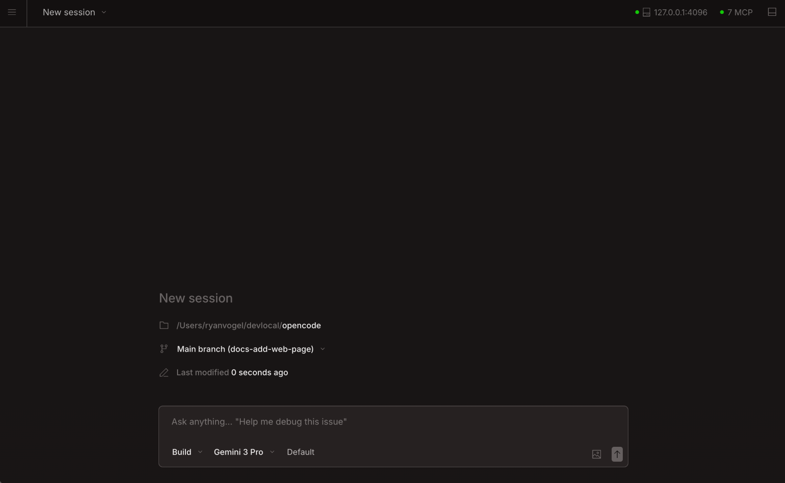

Choose Your Tool
For this hackathon, you are free to choose any development tool you prefer. OpenCode is one of the allowed options — it is a free, open-source AI coding assistant that runs locally on your machine. But you are welcome to use whatever tool makes you most productive.
TRAE vs OpenCode
TRAE
- Subscription required
- Easy to use with power/simplicity
- Safe sandbox
- Managed harness engineering
OpenCode
- Free and open-sourced
- Best for coding/terminal users
- Full control on own computer
- DIY harness engineering
Harness engineering is the underlying framework controlling how the AI agent behaves, makes decisions, and interacts with your codebase. With TRAE, you get a managed and curated harness with guardrails out of the box. With OpenCode, the harness is DIY and customizable — requiring more technical comfort but giving you full control.
Getting Started
OpenCode is already set up on your computer from the Day 0 setup. You can start using it right now by opening your terminal or command prompt and navigating to your project folder.
Open your project with OpenCode
When you're ready to start building, open your project folder with:

This launches OpenCode with your current folder as the context. It will read your existing code, understand your project structure, and be ready to help you build new features.
Click to reveal a starter prompt for your first session
I'm starting a new hackathon project. I want to build a simple web app that shows a list of items. Can you help me set up the basic project structure with HTML, CSS, and JavaScript? I want a clean, modern design.How OpenCode Works
OpenCode uses a chat-like interface where you describe what you want to build in plain English, and it helps you write the code. Here's what it can do for you:
- Write new code — Describe a feature or component and get working code
- Fix bugs — Paste error messages or describe the problem
- Explain code — Ask it to walk through existing code line by line
- Refactor — Improve code quality without changing behavior
- Generate boilerplate — Scaffold project structures and templates
- Write documentation — Auto-generate comments, README files, and API docs
Navigation in OpenCode Mode
When working in OpenCode's chat mode, you'll use keyboard shortcuts to navigate. The most important ones are:
- Arrow keys — Move up and down through messages
- Enter — Send your message
- Esc — Cancel the current input
- Ctrl+C — Interrupt if something is taking too long
After the Hackathon
Even after the hackathon ends, you can continue using OpenCode for your personal projects. It is free and open-source, so there is no expiration or subscription to worry about. You can find the full source code and documentation on GitHub: github.com/sst/open-code.
Next Steps
Now that you understand OpenCode basics, continue to learn about the browser-based interface:
Start with the terminal interface for quick tasks, then switch to the Web UI when you want a more visual, browser-based experience. Both share the same AI model and project context.